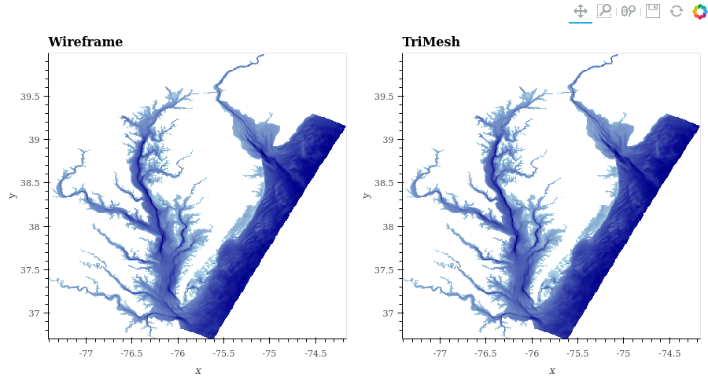
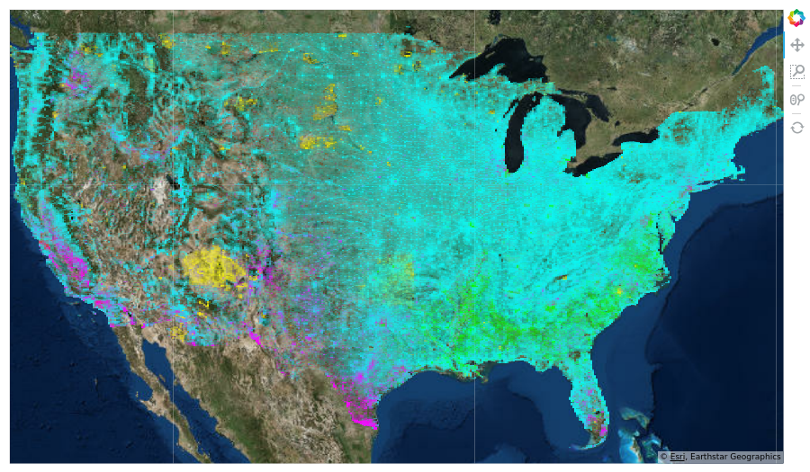
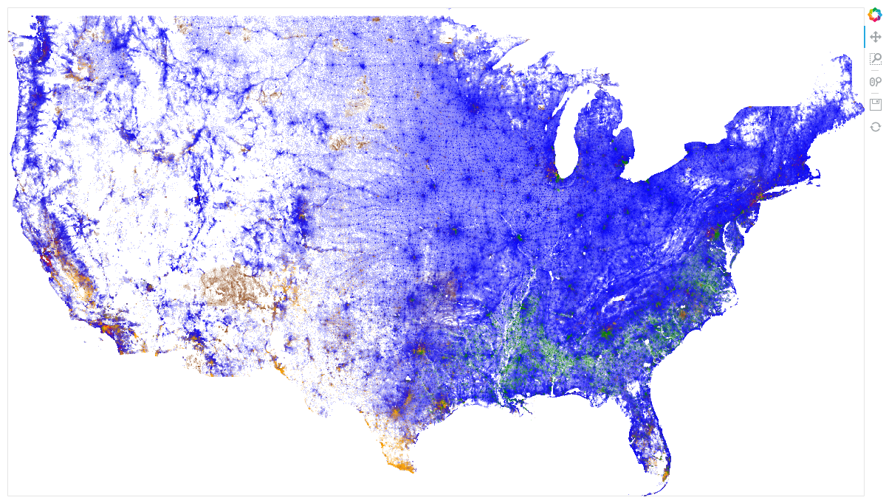
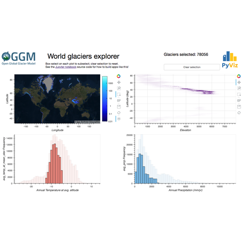

Topics#
Examples of what can be done with GeoViews.
To learn how to use Geoviews, see the User Guide.
NOTE: This is a list of links to examples on external sites. Most examples are on https://examples.holoviz.org.
- Bay Trimesh
Visualize water depth into the Chesapeake and Delaware Bays

- Census
Visualize 2010 Census demographic data

- Gerrymandering
Combine data of very different types to show gerrymandering

- Glaciers
Glaciers explorer using Datashader

- LandSat
Datashade LandSat8 raster satellite imagery